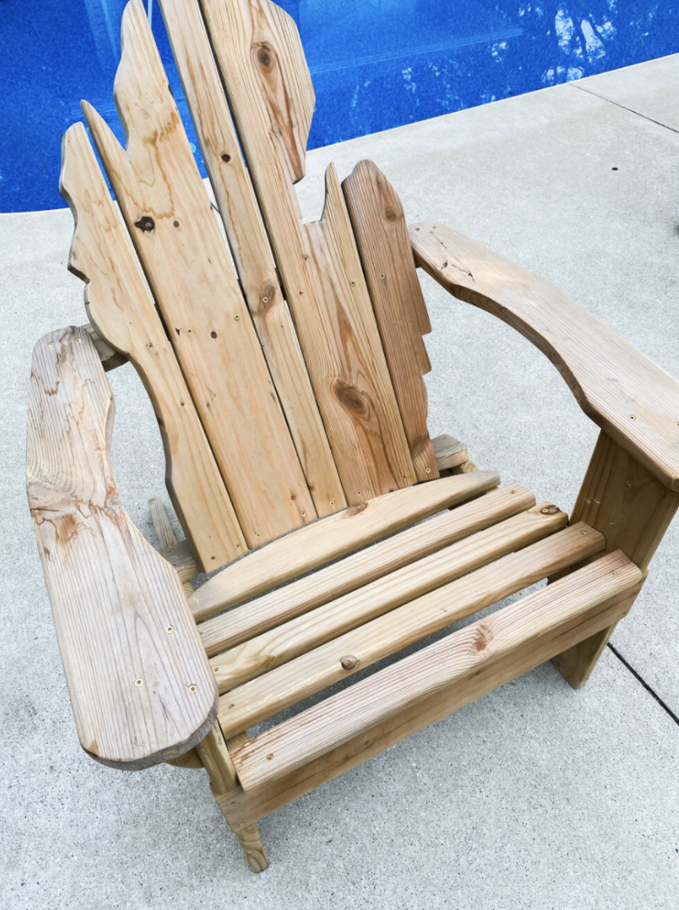
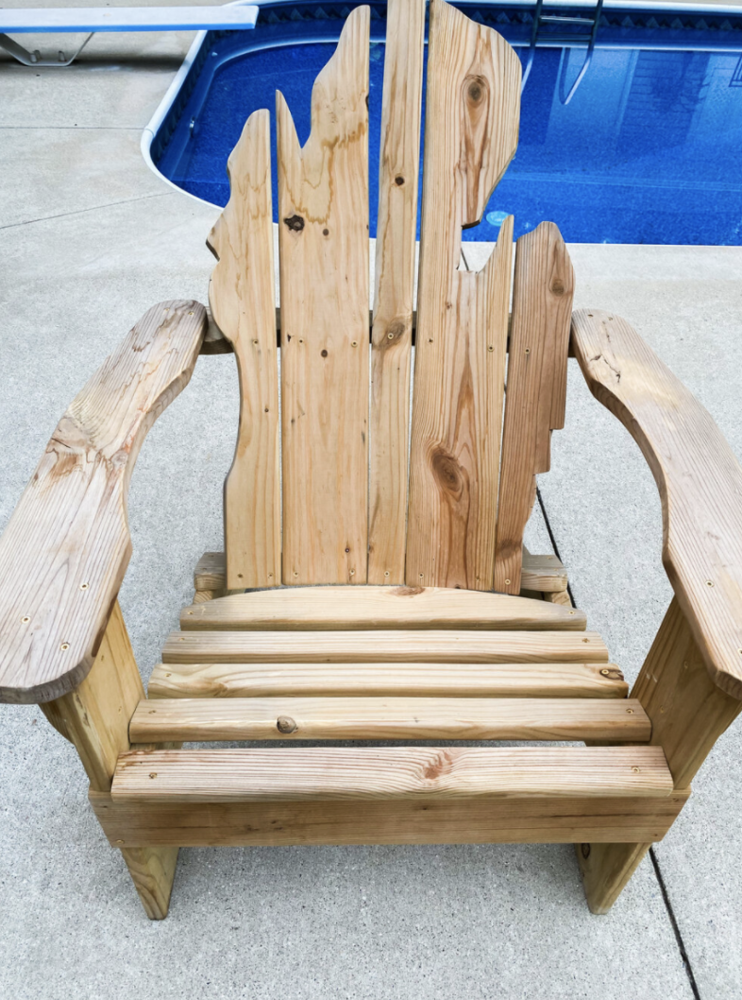
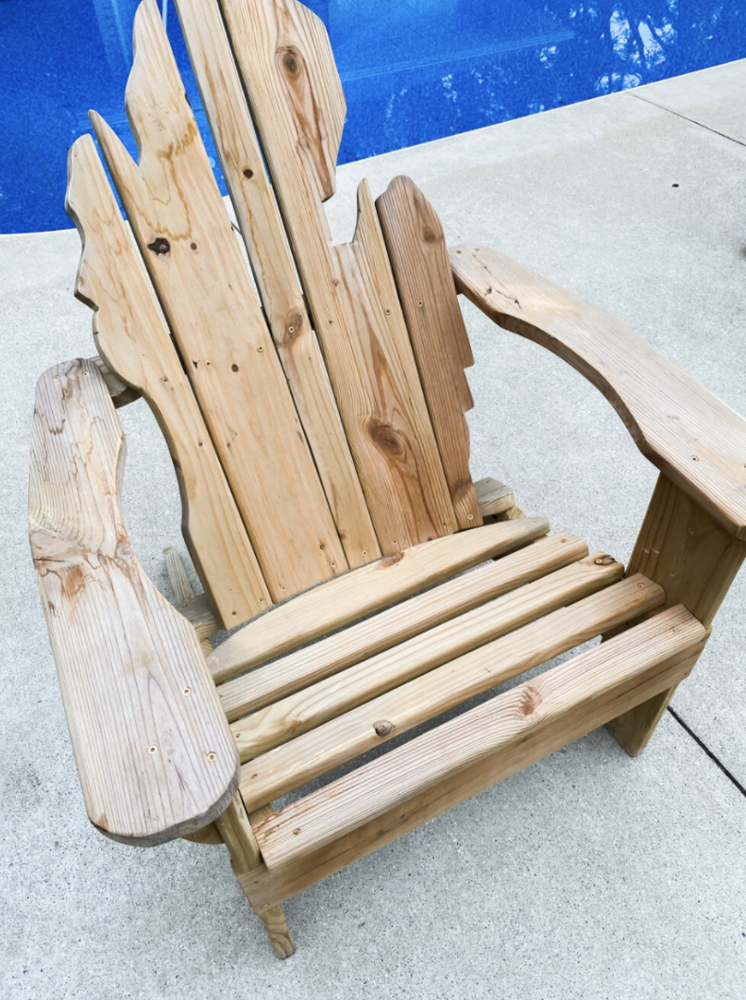
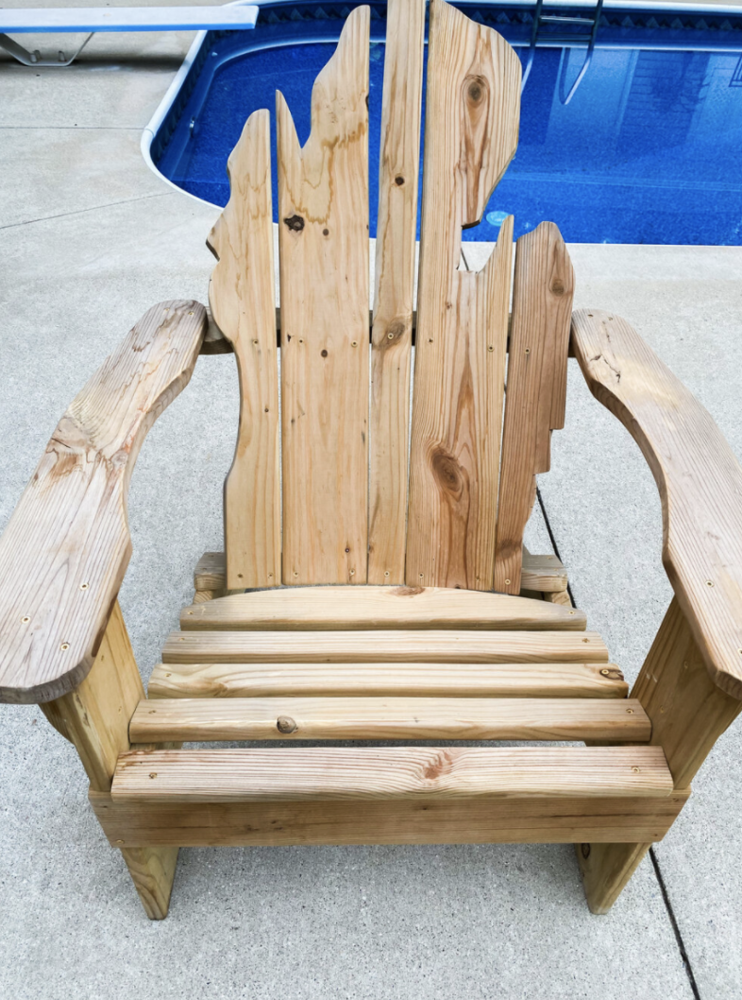

I created a longboard from scratch here. There were many steps to do this. It started with gluing the layers of wood together and letting it sit overnight. Then I had to draw out the shape and cut it with an electric saw. I next had to smooth out the edges with other tools. Then I was able to paint it and design the pattern in addition to covering it with a coat. Last, I had to screw the wheels in so that it could function. I still use it to this day.
I also created a chair from scratch. I had to find many planks of wood and cut them shorter to use for the back of the chair. I then had to draw out and carve each piece so that it fit perfectly to make the Michigan shape of the back of the chair. I then put a glazecoat over it to make it weather-proof. Lastly, I screwed the pieces together. It is currently sitting outside at my house.
 


